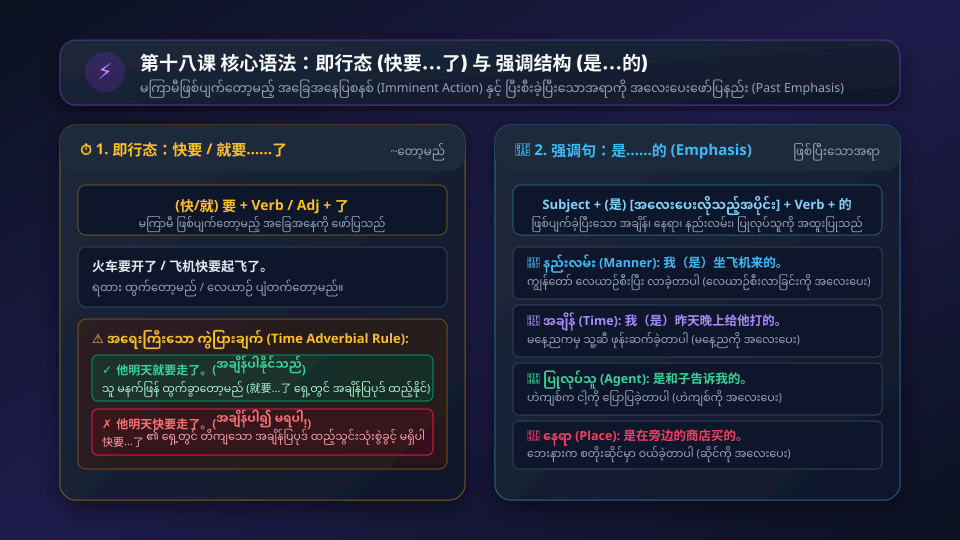

လေဆိပ်တွင် ဧည့်သည်ကြိုဆိုခြင်း • လေယာဉ်အချိန်ဇယား မေးမြန်းခြင်း • မကြာမီဖြစ်ပျက်တော့မည့်ပြ ကြိယာစနစ် (快要……了 / 就要……了) • ပြီးစီးခဲ့ပြီးသောအရာကို အလေးပေးဖော်ပြနည်း (是……的) • "路上辛苦了" နှုတ်ခွန်းဆက် ယဉ်ကျေးမှု
အသံဖိုင်ခလုတ်ကို နှိပ်၍ သဘာဝကျကျ အသံထွက်ကို လေ့လာပါ
从东京来的飞机到了吗？
Cóng Dōngjīng lái de fēijī dào le ma?
ဆုန်း တုန်းကျင်း လိုက် တ ဖေးကျီး တောက် လ မ?
တိုကျိုက လာတဲ့ လေယာဉ် ရောက်ပြီလားခင်ဗျာ/ရှင့်။
飞机晚点了。
Fēijī wǎndiǎn le.
ဖေးကျီး ဝမ်တျန် လ။
လေယာဉ် အချိန်နောက်ကျနေပါတယ်။ (delayed)
飞机快要起飞了。
Fēijī kuài yào qǐfēi le.
ဖေးကျီး ခွိုက် ယောက် ချီဖေး လ။
လေယာဉ် မကြာခင် ပျံတက်တော့မယ်။
飞机大概三点半能到。
Fēijī dàgài sān diǎn bàn néng dào.
ဖေးကျီး တာ့ကိုက် ဆန်း တျန် ပန်း နိန် တောက်။
လေယာဉ် ၃ နာရီခွဲလောက်ဆို ရောက်နိုင်ပါတယ်။
我们先去喝点儿咖啡，一会儿再来这儿吧。
Wǒmen xiān qù hē diǎnr kāfēi, yíhuìr zài lái zhèr ba.
ဝေါ်မိန် ရှန်း ချွိ ဟယ် တျာရ် ခါဖေး၊ ယီဟွေ့ရ် စိုက် လိုက် ကျော့ ပါ။
ငါတို့ အရင် ကော်ဖီလေး သွားသောက်ပြီး ခဏနေမှ ဒီကို ပြန်လာကြရအောင်။
路上辛苦了。
Lùshang xīnkǔ le.
လုဆန်း ဆင်းခူ လ။
လမ်းမှာ ပင်ပန်းခဲ့ပြီနော်။ (ဧည့်ကြို ယဉ်ကျေးမှု စကား)
你怎么知道我要来？
Nǐ zěnme zhīdào wǒ yào lái?
နီ ဇိန်မ ကျီးတောက် ဝေါ် ယောက် လိုက်?
ငါလာမယ်ဆိုတာ မင်း ဘယ်လိုလုပ် သိတာလဲ။
是和子告诉我的。
Shì Hézi gàosu wǒ de.
ဆစ် ဟဲကျစ် ကောက်စု ဝေါ် တ။
ဟဲကျစ်က ငါ့ကို ပြောပြခဲ့တာပါ။ (ပြောပြသူကို အလေးပေးဖော်ပြ)

ဇာတ်ကောင်တစ်ဦးချင်းစီ၏ အသံကို သီးသန့်နားထောင်နိုင်ပါသည်
从东京来的飞机到了吗？
Cóng Dōngjīng lái de fēijī dào le ma?
တိုကျိုက လာတဲ့ လေယာဉ် ရောက်ပြီလားရှင်။
还没到。
Hái méi dào.
မရောက်သေးပါဘူးခင်ဗျာ။
为什么？
Wèi shénme?
ဘာဖြစ်လို့ပါလဲရှင်။
晚点了。飞机现在在上海。
Wǎndiǎn le. Fēijī xiànzài zài Shànghǎi.
နောက်ကျနေလို့ပါ။ လေယာဉ်က အခု ရှန်ဟိုင်းမှာ ရောက်နေပါတယ်။
起飞了吗？
Qǐfēi le ma?
ပြန်ပျံတက်ပြီလားရှင်။
快要起飞了。
Kuài yào qǐfēi le.
ပျံတက်တော့မှာပါခင်ဗျာ။
什么时候能到？
Shénme shíhou néng dào?
ဘယ်အချိန်လောက် ရောက်နိုင်မလဲရှင်။
大概三点半能到。
Dàgài sān diǎn bàn néng dào.
၃ နာရီခွဲလောက် ရောက်နိုင်ပါမယ်ခင်ဗျာ။
刘京，我们先去喝点儿咖啡，一会儿再来这儿吧。
Liú Jīng, wǒmen xiān qù hē diǎnr kāfēi, yíhuìr zài lái zhèr ba.
လျိုကျင်း၊ ငါတို့ အရင် ကော်ဖီလေး သွားသောက်ပြီး ခဏနေမှ ဒီကို ပြန်လာကြရအောင်။
你看，李成日来了。
Nǐ kàn, Lǐ Chéngrì lái le.
ဟော ကြည့်စမ်း၊ လီချန်ရစ် လာပြီ။
你好！路上辛苦了。
Nǐ hǎo! Lùshang xīnkǔ le.
မင်္ဂလာပါ! လမ်းမှာ ပင်ပန်းခဲ့ပြီနော်။
你们好！刘京，你怎么知道我要来？
Nǐmen hǎo! Liú Jīng, nǐ zěnme zhīdào wǒ yào lái?
အားလုံးပဲ မင်္ဂလာပါ! လျိုကျင်း၊ ငါလာမယ်ဆိုတာ မင်း ဘယ်လိုလုပ် သိတာလဲ။
是和子告诉我的。
Shì Hézi gàosu wǒ de.
ဟဲကျစ်က ငါ့ကို ပြောပြတာလေ။
感谢你们来接我。
Gǎnxiè nǐmen lái jiē wǒ.
ငါ့ကို လာကြိုပေးကြတဲ့အတွက် အရမ်းကျေးဇူးတင်ပါတယ်။
我们出去吧！
Wǒmen chū qu ba!
ငါတို့ အပြင်ထွက်ကြစို့!
等一等，还有贸易公司的人接我呢。
Děng yi děng, hái yǒu màoyì gōngsī de rén jiē wǒ ne.
ခဏစောင့်ပါဦး၊ ကုန်သွယ်ရေးကုမ္ပဏီက လူတွေလည်း ငါ့ကို လာကြိုဖို့ ရှိသေးတယ်ကွ။
好，我们在这儿等你。
Hǎo, wǒmen zài zhèr děng nǐ.
ကောင်းပြီလေ၊ ငါတို့ ဒီမှာပဲ မင်းကို စောင့်နေပါ့မယ်။
စကားလုံးကတ်တစ်ခုချင်းစီတွင် အသံထွက်နှင့် အဓိပ္ပာယ်ကို လေ့လာပါ
မှ / က (from)
လေယာဉ်ပျံ
အချိန်နောက်ကျသည်
~တော့မည် (about to)
ပျံတက်သည် (take off)
ခန့်မှန်းခြေ / လောက်
အရင်ဦးစွာ (first)
ပင်ပန်းဆင်းရဲသော
ဝန်ဆောင်မှုဝန်ထမ်း
ဘာကြောင့်လဲ (why)
ခဏမျှ / ခဏနေ
ကျေးဇူးတင်သည်
ကုန်သွယ်ရေး (trade)
ကုမ္ပဏီ (company)
ကျောင်းဆင်း/ဘွဲ့ရသည်
သောက်စရာ / အအေး
ဘီယာ (beer)
အငှားယာဉ် / တက္ကစီ
ရထား (train)
မောင်းသည် / ထွက်ခွာသည်
တိုကျိုမြို့ (Tokyo)
ရှန်ဟိုင်းမြို့ (Shanghai)
တရုတ်သဒ္ဒါစည်းမျဉ်းများကို မြန်မာသဒ္ဒါနှင့် နှိုင်းယှဉ်လေ့လာပါ
လုပ်ဆောင်မှုတစ်ခု သို့မဟုတ် အခြေအနေတစ်ခုသည် မကြာမီ အချိန်အတွင်း ဖြစ်ပျက်တော့မည်ကို ဖော်ပြလိုသောအခါ ကြိယာရှေ့တွင် 要, 快要, 就要 ကို ထည့်သွင်းပြီး ဝါကျအဆုံးတွင် 了 ကို ထည့်ရသည်။
火车要开了。
Huǒchē yào kāi le.
ရထား ထွက်တော့မည်။
他就要来了。
Tā jiù yào lái le.
သူ လာတော့မည်။
快要到北京了。
Kuài yào dào Běijīng le.
ပေကျင်းသို့ ရောက်လုနီးပါး ဖြစ်နေပြီ။
他明天就要走了。
Tā míngtiān jiù yào zǒu le.
သူ မနက်ဖြန် ထွက်ခွာတော့မည်။ (အချိန်ပါနိုင်)
就要……了 ရှေ့တွင် တိကျသော အချိန်ပြပုဒ် (明天, 下星期) ထည့်နိုင်သော်လည်း၊ 快要……了 ရှေ့တွင် တိကျသော အချိန်ပြပုဒ် ထည့်သွင်းခွင့် မရှိပါ (ဥပမာ- 他明天快要走了 ဟု မသုံးရပါ)။
အတိတ်တွင် ပြီးမြောက်ခဲ့ပြီးသော လုပ်ဆောင်မှုတစ်ခု၏ အချိန် (Time)၊ နေရာ (Place)၊ နည်းလမ်း (Manner) သို့မဟုတ် ပြုလုပ်သူ (Agent) ကို အထူးပြု အလေးပေးဖော်ပြလိုသည့်အခါ 是……的 ဖွဲ့စည်းပုံကို သုံးသည်။
他是昨天来的。
Tā shì zuótiān lái de.
သူ မနေ့ကမှ ရောက်လာခဲ့တာပါ။
你是在哪儿买的？
Nǐ shì zài nǎr mǎi de?
မင်း ဒါကို ဘယ်မှာ ဝယ်ခဲ့တာလဲ။
我是坐飞机来的。
Wǒ shì zuò fēijī lái de.
ကျွန်တော် လေယာဉ်စီးပြီး လာခဲ့တာပါ။
是她告诉我的。
Shì tā gàosu wǒ de.
သူမက ငါ့ကို ပြောပြခဲ့တာပါ။
他是怎么来的？他是坐出租车来的。
Tā shì zěnme lái de? Tā shì zuò chūzūchē lái de.
သူ ဘယ်လိုလာခဲ့တာလဲ။ သူ တက္ကစီစီးပြီး လာခဲ့တာပါ။ (နည်းလမ်းကို အလေးပေး)
火车要开了，快上去吧。
Huǒchē yào kāi le, kuài shàngqu ba.
ရထား ထွက်တော့မယ်၊ မြန်မြန်တက်ကြစို့။
饭快要做好了，你们在这儿吃吧。
Fàn kuài yào zuòhǎo le, nǐmen zài zhèr chī ba.
ထမင်း ချက်ပြီးတော့မယ်၊ ခင်ဗျားတို့ ဒီမှာပဲ စားကြပါ။
我从法国来，我是坐飞机来的。我在北京语言大学学习汉语。在法国我没学过汉语，我不会说汉语，也不会写汉字。现在我会说一点儿了，我很高兴。我应该感谢我们的老师。
(မြန်မာပြန်: ကျွန်တော် ပြင်သစ်က လာတာပါ၊ လေယာဉ်စီးပြီး လာခဲ့တာပါ။ ပေကျင်းဘာသာစကားတက္ကသိုလ်မှာ တရုတ်စာ သင်ယူနေပါတယ်။ ပြင်သစ်မှာတုန်းက တရုတ်စာ မသင်ဖူးခဲ့လို့ စကားလည်း မပြောတတ်၊ စာလည်း မရေးတတ်ခဲ့ပါဘူး။ အခုတော့ နည်းနည်း ပြောတတ်လာပြီမို့ အရမ်းဝမ်းသာပါတယ်။ ဆရာမတွေကို ကျေးဇူးတင်သင့်ပါတယ်။)
အဖြေမှန်ကို ရွေးချယ်ပြီး ချက်ချင်း အဖြေမှန်စစ်ဆေးနိုင်ပါသည်
၁။ "ခရီးဝေးမှ လာသော ဧည့်သည်အား လေဆိပ်တွင် တွေ့ဆုံချိန်၌ နွေးထွေးစွာ နှုတ်ဆက်သည့်စကား" မှာ အဘယ်နည်း။
၂။ "သူ မနက်ဖြန် ထွက်ခွာတော့မည်" ဟူသော ဝါကျတွင် မည်သည့်ဖွဲ့စည်းပုံ မှန်ကန်သနည်း။
၃။ "我是坐飞机来的" ဝါကျတွင် "是……的" ဖွဲ့စည်းပုံသည် မည်သည့်အပိုင်းကို အလေးပေးဖော်ပြသနည်း။
၄။ "从东京来的飞机晚点了" ၏ မြန်မာပြန်မှာ အဘယ်နည်း။